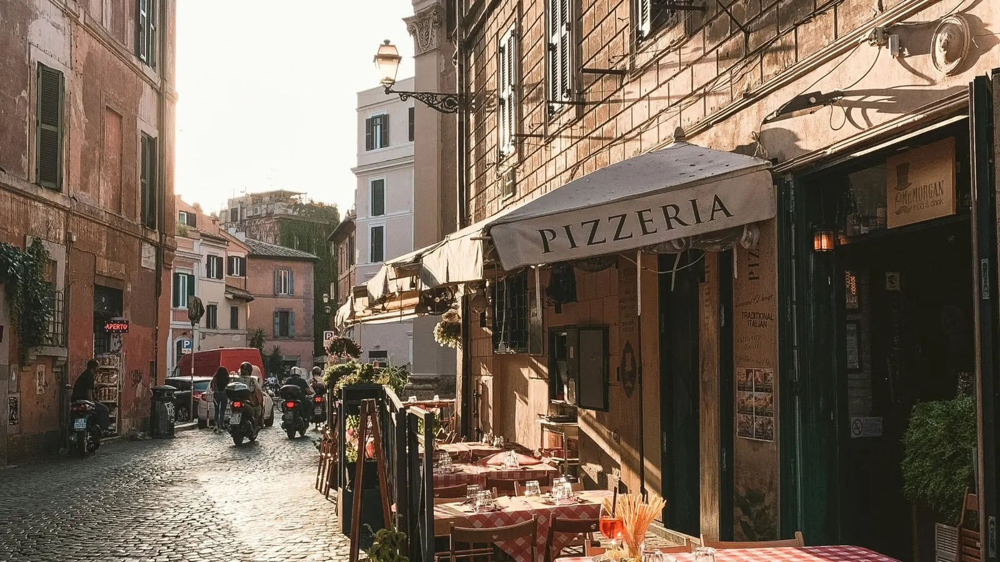

What a ZTL is
ZTL stands for Zona a Traffico Limitato — a limited traffic zone. It usually covers the historic center of a city or town. Only residents, taxis, buses and other authorized vehicles may enter, at least during certain hours.
There is no barrier. Cameras at each entry point read your number plate, and if your car is not on the authorized list, a fine is issued automatically.
You will find ZTLs in Florence, Rome, Milan, Bologna, Pisa, Siena, Naples, Verona and many smaller towns, especially in Tuscany. Some cities also have environmental zones — such as Milan’s Area B and Area C or Rome’s Fascia Verde — with their own rules and charges.
How to read the gates
At each entry you will see a white sign with a red circle and the words Zona Traffico Limitato, often with the hours when it applies. Many gates also have an electronic panel:
| The panel says | Meaning |
|---|---|
| VARCO ATTIVO | The gate is active. Do not enter unless you are authorized. |
| VARCO NON ATTIVO | The gate is not active right now. Entry is allowed. |
How fines work
- Every entry counts separately. Driving in and out twice can mean two fines. In Florence, each unregistered entry is its own violation.
- The amount depends on the city — for timed ZTLs it is often in the range of about €80 to €335 per entry, plus notification costs.
- Rental cars: the notice goes first to the rental company, which passes on your details and usually adds an administration fee.
- It arrives late. Because the notice travels through the rental company, it can reach you months after the trip.
Paying quickly can reduce the amount in some cases — read the notice carefully when it arrives.
Driving to a hotel inside a ZTL
If your hotel is inside a ZTL, contact it before you arrive and ask how access works. In some cities, such as Florence, hotels can register your number plate for the time you need to unload luggage — but it is not automatic. You must give them your plate number and confirm it at check-in.
Often the easiest option is to park in a garage just outside the zone and walk or take a taxi for the last part.
Simple rules that avoid fines
- Don’t trust the GPS alone. Many navigation apps do not know whether a gate is active.
- Don’t follow local cars. Residents and taxis have permits — you probably don’t.
- Park outside the historic center and walk, or use buses and taxis.
- Use the car for countryside days and the train between cities.
- Ask before you drive in: your hotel or rental desk knows the local rules.
Italian words on the signs
Checked against official sources. Rules and prices change: always confirm on these sites before you travel.
Plan your trip
Some links are affiliate links: booking through them costs you nothing extra and helps keep 687 free.
Plan the road days, not the fines.
687 Italy keeps driving inside the trip: car rental search from 21 arrival airports, Navigate with Apple Maps, Google Maps or Waze, and parking and quick stops in Nearby. Plan city stages on foot or by train and keep the car for the countryside — the itinerary stays connected either way.